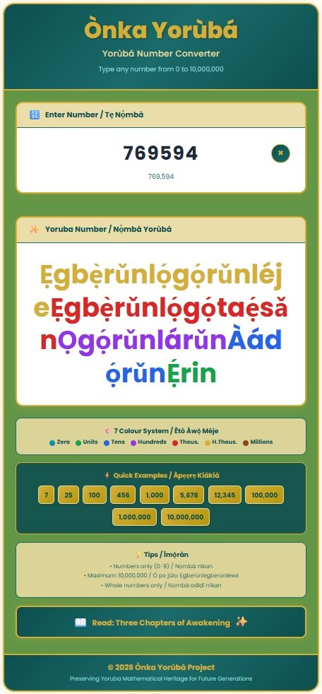

The Portal in Your Pocket
There is a door that has been waiting for you. Not a door of wood or iron, but a door of light, colour, and ancestral memory. The Ònka Yorùbá Number Converter is that door—and today, it swings wide open.
Imagine standing at a market in Ibadan, and a price flashes before your eyes: ₦47,500. In the old days, that number would pass through your mind in a borrowed tongue, a foreign rhythm. But now? Now you pause. You type. And in an instant, the screen transforms those cold digits into something warm, something yours: Ẹgbẹ̀rǔnlógójìÉjeỌgọ́rǔnlárǔn. The thousands glow red like the fire of your ancestors. The hundreds pulse purple like royalty. You are no longer just reading a price—you are reclaiming it.
This app was not designed in haste. Every curve, every gradient of orange and amber, every shadow and glow was crafted with one purpose: to make you feel at home. The moment you open it; you are not greeted by complexity or confusion. You are greeted by warmth. The interface welcomes you like a grandfather’s and grandmother's embrace—familiar, safe, and full of wisdom waiting to be shared. The input field sits patiently, asking only one simple question: "What number lives in your heart today?"
Type it. Any number. From the humble Ódo to Over a Tredecillion. Watch as the app breathes life into digits that once felt foreign. Watch as numbers you've seen a thousand times suddenly speak your ancestral tongue. This is not conversion—this is resurrection. Every number you type is an ancestor whispering back: "We never forgot. We were waiting for you to remember."
The design is deliberate. The colours are intentional. The simplicity is a gift. Because true power does not need to be complicated. True power flows. And in your hands, through this gentle, beautiful app, flows the mathematical spirit of a civilisation that counted the stars long before others learned to count their fingers.
Forty-Six Colours, Forty-Six Keys, One People
Close your eyes and imagine a world without colour. Grey skies. Grey trees. Grey faces. That is what numbers have been for too long—grey, lifeless, and disconnected from the soul. But the Yorùbá people have always known that the universe speaks in colour. Our ancestors wore colours. Our celebrations explode in colour. Our proverbs paint pictures. Why, then, should our numbers be any different?
The 46 Colour System is not decoration—it is revelation.
When Cerulean appears for zero, it speaks of the void before creation, the stillness before the drumbeat, and the breath before the word. When Green illuminates the units—Ení, Éjì, Ẹ́ta—it echoes the fresh leaves of new growth, the first steps of a child learning to walk, the beginning of all journeys. Blue rises for the tens—Ẹ́wǎ, Ogún, Ọgbọ̀n—steady as the ocean, deep as the afternoon sky, reminding us that progress is built one wave at a time.
Then comes Purple for the hundreds—Ọgọ́rǔn and its mighty multiples—the colour of royalty, of Obas and Oloyes, declaring that your numbers have entered the palace of significance. Red ignites for the thousands—Ẹgbẹ̀rǔn—the colour of power, of courage, of hearts that refuse to be small. It is the fire in your chest when you realise your language can count higher than your doubts ever whispered.
Golden crowns the hundred thousand, shimmering like the treasures of ancient Ilé-Ifẹ̀, like the dawn breaking over the Niger, like the promise that your people have always been wealthy—wealthy in mind, in spirit, and in mathematical genius. And finally, Brown anchors the over a Tredecillion—Ẹgbẹ̀rǔnlẹ́gbẹ̀rǔn—the colour of the earth itself, of roots that run deep, of a heritage so grounded that no wind of colonialism, no storm of forgetting, could ever tear it away.
When a child sees Ọgọ́rǔnlẹ́rin (400) and watches purple meet green, something magical happens. The brain does not just read—it sees. It feels. It remembers. Studies tell us that colour accelerates learning by 78%. But we did not need studies. Our ancestors painted numbers in colour long ago, in the stripes of the Aṣọ Òkè, in the rings of the iroko tree. The 15 Colour System simply brings home what was always ours.
This is how empires are rebuilt—not with swords, but with sight. Not with force, but with understanding. One colour. One number. One child at a time.
The Awakening Has No Address
You are reading this in Lagos, and the traffic has stopped. You are reading this in London, and the rain taps your window. You are reading this in Houston, New York City, or Londrina, and your coffee grows cold. You are reading this in Salvador, São Paulo, in Brazil; Havana, in Cuba; Toronto; Dubai; and even Johannesburg or Berlin. It does not matter where your body stands—what matters is where your spirit reaches.
The Ònka Yorùbá Number Converter was built for the Yorùbá without borders. It was built for the son whose father's father counted in a language that skipped a generation—but will skip no more. It was built for the daughter who grew up hearing English in school but Yorùbá in her dreams. It was built for the professional who types budgets in over a Tredecillion and now wants those over a Tredecillion to carry meaning. It was built for the grandfather or grandmother who smiles when he or she sees Àádọ́rǔnẸ́sǎn (99) because she remembers a childhood where every number had a song.
This app asks nothing of you but curiosity. No registration. No passwords. No payments. No barriers. Just open it. Just type. Just witness.
And here is the prophecy that burns within these words: Every number you convert is a seed. Plant it in your child's mind during breakfast. Plant it in your own mind during your commute. Plant it in a text message to a friend: "Did you know 7,777 in Yorùbá is Ẹgbẹ̀rǔnléjeỌgọ́rǔnléjeÀádọ́rinÉje?" Watch their eyes widen. Watch curiosity catch fire. Watch as people begin to count themselves back into greatness.
The world told us our language was not mathematical. We are proving them wrong—one conversion at a time. The world told us our children should learn "useful" languages. We are showing them that no language is more useful than the one that carries your soul. The world told us to look forward and forget. We are demonstrating that the greatest way forward is to carry our past with pride.
So here is your charge, your mission, your awakening: Let no number pass your eyes unconverted. When you see a phone number, convert it. When you see a price, convert it. When you see a date, a distance, or a statistic—pause, open this app, and convert it. Let the colours wash over you. Let the words settle into your memory. Let the Yorùbá numbers become so familiar that they stop feeling like translations and start feeling like home.
For you are not just using an app. You are joining a movement. You are part of a generation that said, "Enough sleeping. It is time to count." And when over a Tredecillion of us count together, in one voice, in fifteen colours, in the language of our ancestors—the world will have no choice but to listen.
Ẹgbẹ̀rǔnlẹ́gbẹ̀rǔn is not just a Tredecillion Plus. It is a Tredecillion Plus dreams. A Tredecillion Plus children. A Tredecillion Plus reasons to remember who we are.